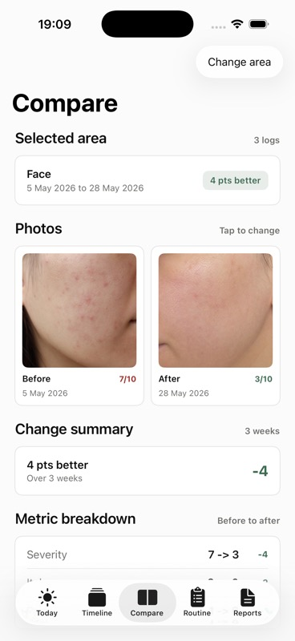

Skinfile
Private skin photo journal
Track what changed, when it changed, and what you tried.
Skinfile helps you log photos, symptoms, products, flare context, and notes so your next dermatology visit starts with a clear timeline.
- Keep skin photos and notes organized by date, area, and concern.
- Compare progress over time without relying on memory.
- Create a clean appointment report when you choose to export.
No public sharing. No ads. No data selling. You control exports.

Use Skinfile for
Track the skin changes you actually need to remember.
Each journal starts the same way: dated photos, symptoms, context, products used, and a report you can bring to an appointment.
Acne progress tracker
Compare facial acne photos, severity, and routines over time.
Eczema flare diary
Record itch, dryness, flare context, and products used.
Psoriasis photo journal
Keep a dated photo timeline for plaques, scaling, and symptoms.
Rosacea trigger tracker
Log redness, flushing, severity, and tagged context.
Mole photo timeline
Keep dated photos and notes for spots you want to discuss.
Dermatologist visit report
Turn your timeline into a clean appointment-ready PDF.